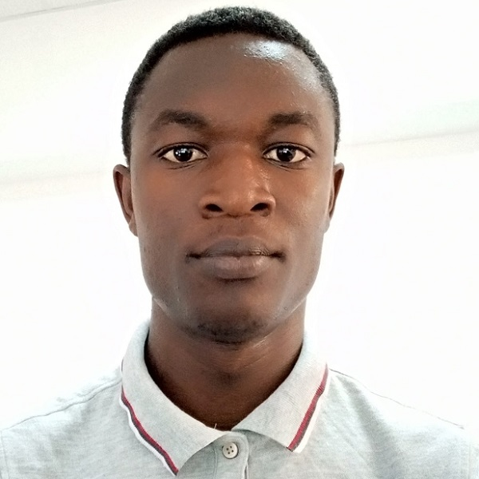

CV for Timothy Asare

Name: Timothy Asare
Address: P.O. Box 298 Sunyani
Phone:+233206096789
Email:timothy.asare@outlook.com
Work Experience
Graduate trainee software engineering- Amalitech GGmbh(Jan 2021 to date)
- Learnt fundamentals of software development
- development of websites and mobile applications
- image processing and video editting
Flight Operator - Flyzipline International(2019 to 2020)
- Maintained electrical and electronic equipment
- Operated unmanned aerial vehicles
- Perform routine and non-routine maintenance on unmanned aerial vehicles
Client Service Consultant
- maintained communication with clients
- prepared bills
- resolved client complaints
Educational Background
-
BSc Electrical and Electronic Engineering -University of Energy and Natural Resources (2013 to 2017)
-
West African Senior High School Certificate in General Science (2008 to 2012)
Past research
- Production of alternate fuel using fatty nuts(blighia sapida)
- Papermaking using leaves of fibrous monocotyledonous plants
- Comparison of ABC and DQ models of Induction machine
Research Interests
- Applied Machine learning in design and build of autonomous electric vehicles
- West African Senior High School Certificate in General Science (2008 to 2012)
Hobbies
- Playing
- Watching
- Reading and writing poetry
socials
Linkedin
twitter